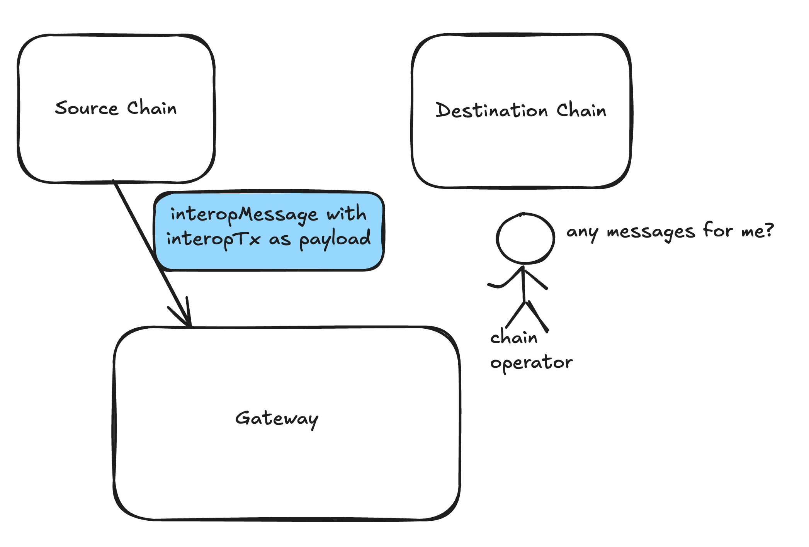

Interop Transactions
Basics
The InteropTransaction sits at the top of our interop stack, acting as the “delivery” mechanism for Interop Bundles.
Think of it like a car that picks up our “hitchhiker” bundles and carries them to their destination.
Note: Interop Transactions aren’t the only way to execute a bundle. Once an interop bundle is created on the source chain, users can simply send a regular transaction on the destination chain to execute it.
However, this approach can be inconvenient as it requires users to have funds on the destination chain to cover gas fees and to configure the necessary network settings (like the RPC address).
InteropTransactions simplify this process by handling everything from the source chain. They allow you to select which interopBundle to execute, specify gas details (such as gas amount and gas price), and determine who will cover the gas costs. This can be achieved using tokens on the source chain or through a paymaster.
Once configured, the transaction will automatically execute, either by the chain operator, the gateway, or off-chain tools.
An InteropTransaction contains two pointers to bundles:
- feesBundle: Holds interop calls to cover fees.
- bundleHash: Contains the main execution.
Interface
The function sendInteropTransaction provides all the options. For simpler use cases, refer to the helper methods
defined later in the article.
contract InteropCenter {
/// Creates a transaction that will attempt to execute a given Bundle on the destination chain.
/// Such transaction can be 'picked up' by the destination chain automatically.
/// This function covers all the cases - we expect most users to use the helper
/// functions defined later.
function sendInteropTransaction(
destinationChain,
bundleHash, // the main bundle that you want to execute on destination chain
gasLimit, // gasLimit & price for execution
gasPrice,
feesBundleHash, // this is the bundle that contains the calls to pay for gas
destinationPaymaster, // optionally - you can use a paymaster on destination chain
destinationPaymasterInput); // with specific params
struct InteropTransaction {
address sourceChainSender
uint256 destinationChain
uint256 gasLimit;
uint256 gasPrice;
uint256 value;
bytes32 bundleHash;
bytes32 feesBundleHash;
address destinationPaymaster;
bytes destinationPaymasterInput;
}
}
After creating the InteropBundle, you can simply call sendInteropTransaction to create the complete transaction
that will execute the bundle.
Retries
If your transaction fails to execute the bundle (e.g., due to a low gas limit) or isn’t included at all (e.g., due to too low gasPrice), you can send another transaction to attempt to execute the same bundle again.
Simply call sendInteropTransaction again with updated gas settings.
Example of Retrying
Here’s a concrete example: Suppose you created a bundle to perform a swap that includes transferring 100 ETH, executing the swap, and transferring some tokens back.
You attempted to send the interop transaction with a low gas limit (e.g., 100). Since you didn’t have any base tokens on the destination chain, you created a separate bundle to transfer a small fee (e.g., 0.0001) to cover the gas.
You sent your first interop transaction to the destination chain, but it failed due to insufficient gas. However, your “fee bundle” was successfully executed, as it covered the gas cost for the failed attempt.
Now, you have two options: either cancel the execution bundle (the one with 100 ETH) or retry.
To retry, you decide to set a higher gas limit (e.g., 10,000) and create another fee transfer (e.g., 0.01) but use the same execution bundle as before.
This time, the transaction succeeds — the swap completes on the destination chain, and the resulting tokens are successfully transferred back to the source chain.
Fees & Restrictions
Using an InteropBundle for fee payments offers flexibility, allowing users to transfer a small amount to cover the fees while keeping the main assets in the execution bundle itself.
Restrictions
This flexibility comes with trade-offs, similar to the validation phases in Account Abstraction or ERC4337, primarily designed to prevent DoS attacks. Key restrictions include:
- Lower gas limits
- Limited access to specific slots
Additionally, when the INTEROP_CENTER constructs an InteropTransaction, it enforces extra restrictions on
feePaymentBundles:
- Restricted Executors:
Only your AliasedAccount on the receiving side can execute thefeePaymentBundle.
This restriction is crucial for security, preventing others from executing your fee bundle, which could cause your transaction to fail and prevent the execution bundle from processing.
Types of Fees
Using the Destination Chain’s Base Token
The simplest scenario is when you (as the sender) already have the destination chain’s base token available on the source chain.
For example:
- If you are sending a transaction from Era (base token: ETH) to Sophon (base token: SOPH) and already have SOPH on ERA, you can use it for the fee.
To make this easier, we’ll provide a helper function:
contract InteropCenter {
// Creates InteropTransaction to the destination chain with payment with base token.
// Before calling, you have to 'approve' InteropCenter to the ERC20/Bridge that holds the destination chain's base tokens.
// or if the destination chain's tokens are the same as yours, just attach value to this call.
function sendInteropTxMinimal(
destinationChain,
bundleHash, // the main bundle that you want to execute on destination chain
gasLimit, // gasLimit & price for execution
gasPrice,
);
}
Using paymaster on the destination chain
If you don’t have the base token from the destination chain (e.g., SOPH in our example) on your source chain, you’ll need to use a paymaster on the destination chain instead.
In this case, you’ll send the token you do have (e.g., USDC) to the destination chain as part of the feeBundleHash. Once there, you’ll use it to pay the paymaster on the destination chain to cover your gas fees.
Your InteropTransaction would look like this:
Automatic Execution
One of the main advantages of InteropTransactions is that they execute automatically. As the sender on the source chain, you don’t need to worry about technical details like RPC addresses or obtaining proofs — it’s all handled for you.
After creating an InteropTransaction, it can be relayed to the destination chain by anyone. The transaction already includes a signature (also known as an interop message proof), making it fully self-contained and ready to send without requiring additional permissions.
Typically, the destination chain’s operator will handle and include incoming InteropTransactions. However, if they don’t, the Gateway or other participants can step in to prepare and send them.
You can also use the available tools to create and send the destination transaction yourself. Since the transaction is self-contained, it doesn’t require additional funds or signatures to execute.

Once they see the message, they can request the proof from the Gateway and also fetch the InteropBundles contained within the message (along with their respective proofs).

As the final step, the operator can use the received data to create a regular transaction, which can then be sent to their chain.
The steps above don’t require any special permissions and can be executed by anyone.
While the Gateway was used above for tasks like providing proofs, if the Gateway becomes malicious, all this information can still be constructed off-chain using data available on L1.
How it Works Under the hood
We’ll modify the default account to accept interop proofs as signatures, seamlessly integrating with the existing ZKSync native Account Abstraction model.